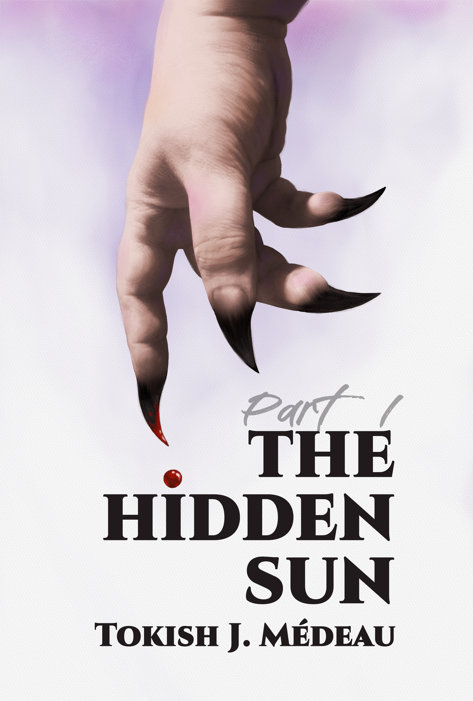
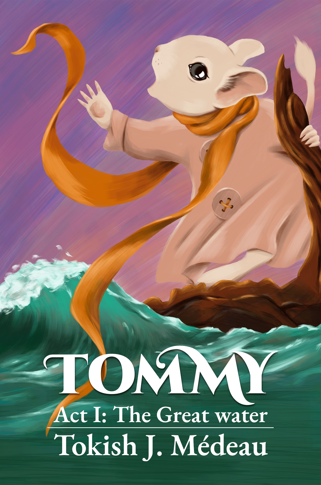

Fourteen-year-old Emmy is seriously ill. Raised in a deeply religious community, Emmy knows the language of faith by heart. She also knows how to lie, steal, manipulate, and hide behind an innocent smile. She is neither an angel nor a devil. She is simply Emmy, but that is not enough for the people who need her to become something more.
As her world begins to fracture, strange visions follow wherever she goes, blurring the boundaries between memory, dream, and reality. The first vision carries her aboard the seventeenth-century privateer White Lion, commanded by Captain John Jope. Those that follow reveal fleeting fragments of a woman she has never become... yet.
Each vision leaves behind another piece of a puzzle that refuses to obey the ordinary rules of time. The past begins to cast its shadow over the future, while moments from a life not yet lived feel increasingly familiar. Are these merely the final illusions of a dying mind, or memories of a life that has yet to be lived?
CHIVEY is a literary novel blending Southern Gothic, magical realism, historical fiction, and psychological drama. Set against the landscapes of the American South, it intertwines history and the present, faith and manipulation, innocence and ambition, exploring how easily hope can become spectacle, belief can become power, and how a living child can be transformed into an idol long before she has the chance to become herself.

Bobby falls into a world that should not exist.
There are places beneath the familiar ones. Doors that lead somewhere they shouldn't. Dreams that refuse to remain dreams. And a presence waiting on the other side of everything he knows.
The deeper Bobby goes, the less certain he becomes of where he is, who he can trust, and whether the world he left behind is still the world he remembers.
Somewhere between sleep and waking, life and death, past and future, something is waiting for him.
And it knows his name.

Tommy is a little degu who lives with his father beside a quiet river, surrounded by tall grass, wild strawberries, and warm summer days. He loves sweet berries, dreams about the clouds overhead, and knows very little about the vast world beyond their burrow.
Then, one day, the water comes.
Swept away from everything he has ever known, Tommy finds himself alone in a vast, flooded world. His journey carries him across the water on an unlikely raft, where he meets others who have lost their homes: a gentle partridge, a timid land turtle, a pair of mischievous chameleons, and a grumpy toad.
Together, they face storms, fog, hunger, predators, and the terrifying power of the river. Along the way, the frightened little degu discovers that even in a world that has suddenly become strange and dangerous, friendship can be found in the most unexpected places.
TOMMY is a story about loss and hope, loneliness and friendship, fear and courage. It is the journey of a small creature through a vast and changing world, carrying one precious hope in his heart: to find his way home.